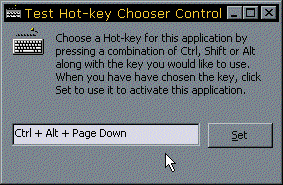

VB5 HotKey Control (22K)
VB5 HotKey Control (22K)
 Bugs: 2 / 2
Bugs: 2 / 2
 Issues: 0 / 0
Issues: 0 / 0
 Questions: 0 / 0
Questions: 0 / 0
 22 Nov 1999
22 Nov 1999
First Posted
 Subclassing Without The Crashes
Subclassing Without The Crashes
 Creating and Responding to System-Wide Hotkeys
Creating and Responding to System-Wide Hotkeys

ComCtl32.DLL HotKey Control
Provides a simple way to allow your user to set up hotkeys
The hotkey control is one of the controls provided as part of COMCTL32.DLL, but, being of somewhat limited utility, has never found its way into Visual Basic's controls. If you need one, however, it does the job really well.
When it has focus, you can press CTRL, ALT and SHIFT key combinations, and it will show the chosen key combination as a string in a text box. You can then use the key combination as, in this example, a hot key for the application, or you could use it as a menu accelerator.
For some more details of setting up Hotkeys, see the subclassing article Creating and Responding to System-Wide Hotkeys. To set up a simple hot-key to activate your application, you only need this code:
Private Const WM_SETHOTKEY = &H32
Private Declare Function SendMessageByLong Lib "user32" _
Alias "SendMessageA" _
(ByVal hWnd As Long, _
ByVal wMsg As Long, _
ByVal wParam As Long, _
ByVal lParam As Long _
) As Long
Public Enum echkModifierKeys
HOTKEYF_SHIFT = &H1
HOTKEYF_CONTROL = &H2
HOTKEYF_ALT = &H4
HOTKEYF_EXT = &H8
HOTKEYF_SHIFTCONTROL = &H3
HOTKEYF_ALTSHIFT = &H5
HOTKEYF_CONTROLALT = &H6
HOTKEYF_CONTROLALTSHIFT = &H7
End Enum
Public Function SetHotKey( _
ByVal hWnd As Long, _
ByVal eKeyCode As VBRUN.KeyCodeConstants, _
ByVal eModifier As echkModifierKeys _
) As Boolean
Dim iR As Long
Dim lKey As Long
' wParam is a word with the LoByte set to
' the key code and the HiByte set to the modifier:
lKey = (eKeyCode And &HFF&) Or _
((eModifier And &HFF&) * &H100&)
iR = SendMessageByLong(hWnd, WM_SETHOTKEY, lKey, 0)
Select Case iR
Case 2
Err.Raise 20001, App.EXEName & ".SetHotKey", _
"Hot key previously assigned"
Case 1
' success
SetHotKey = True
Case 0
Err.Raise 20002, App.EXEName & ".SetHotKey", _
"Invalid window for Hot key"
Case -1
Err.Raise 20003, App.EXEName & ".SetHotKey", _
"Invalid Hot key"
Case Else
Err.Raise 20004, App.EXEName & ".SetHotKey", _
"Failed to set Hot key"
End Select
End Function
Please note there is no VB6 compile currently available for this control, but its easy enough to build one from the source. Just switch the subclasser from the VB5 version (SSubTmr.DLL) to the VB6 one (SSubTmr6.DLL), change the Project Name and File Name and you're away.